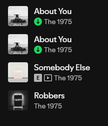

meus favoritos
as coisas que eu mais amoooo ❤️
🎬 filmes & séries


amo doramas com histórias emocionantes e com romance cliche, não assisto serie então é so dorama.
📚 livros
Não leio livros, so leio devocional de vez em quando
🎧 músicas

minha musica fav são essas,mas tem de tudo um pouco para cada momento do dia na minha playlist.